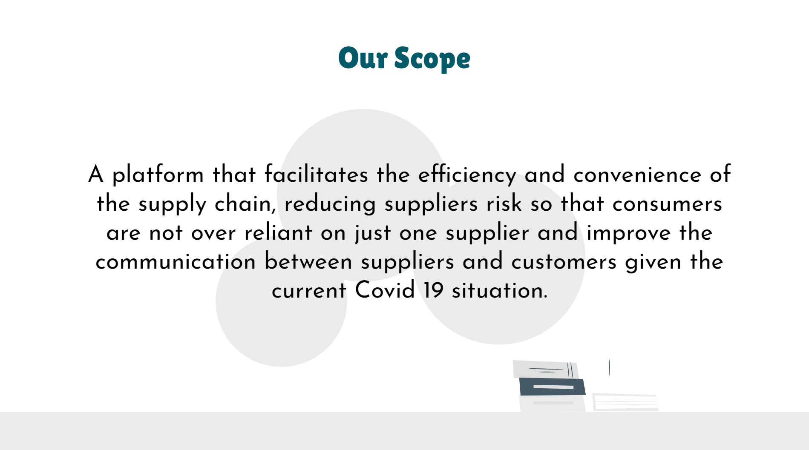
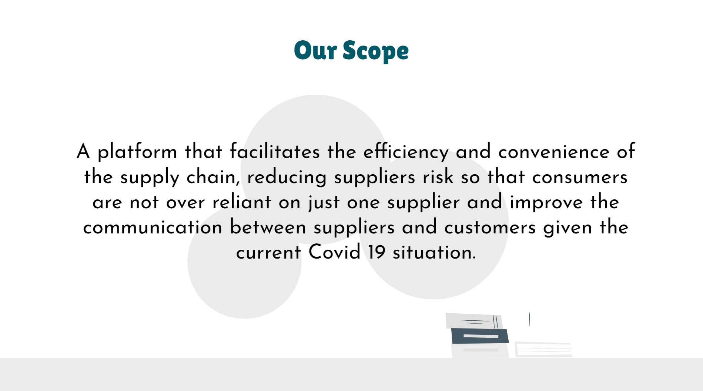

Brainstorming & Ideation
Back into the process again ...
Mohammad Hafeez • Nov 7 • 1 min read
During the Second week, my group and I started coming up with ideas for our challenge. Thus, to track all our ideas, I created a wishlist document where all of us could dump our ideas which we could later review and pick out the most relevant ones.
However, when we went to our lecturer for advice after our brainstorming session, he told us that our idea could be implemented during any time and was not necessarily targeting the supply chain during the pandemic period. Therefore, we had to rethink and come up with ways that solve critical pain points manufacturers experience. Thus, we came with new and better ideas to solve problems such as supplier risk and supply chain transparency.
Once our idea was accepted, we went on and created our inception deck where we came up with our scope and discussed what kind of technologies we would be using as well as out not list.


 

After completing our inception deck, we started working on our product backlog while referring to our wishlist document. We also added task sizings to all the tasks so that we would know which tasks would require more time. Finally, we prioritized our tasks and created the Trello board.